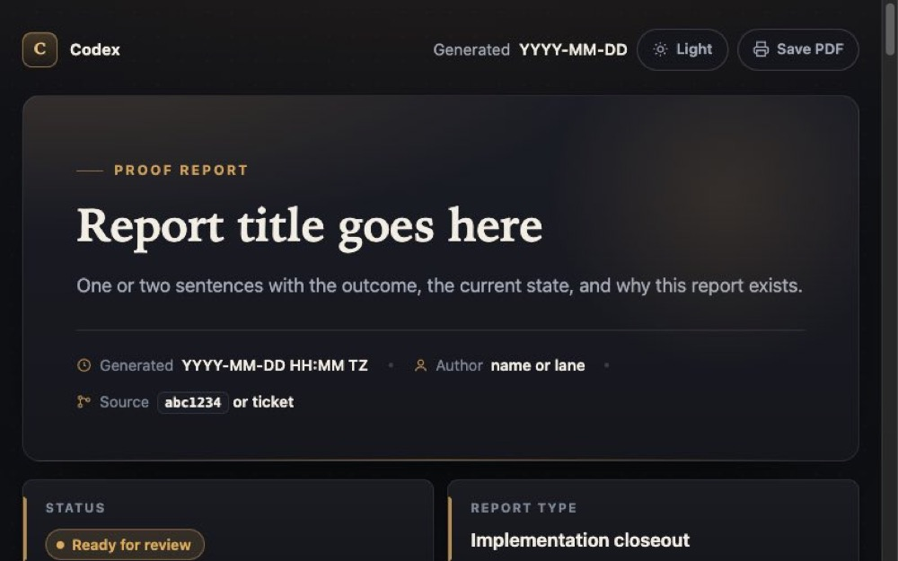
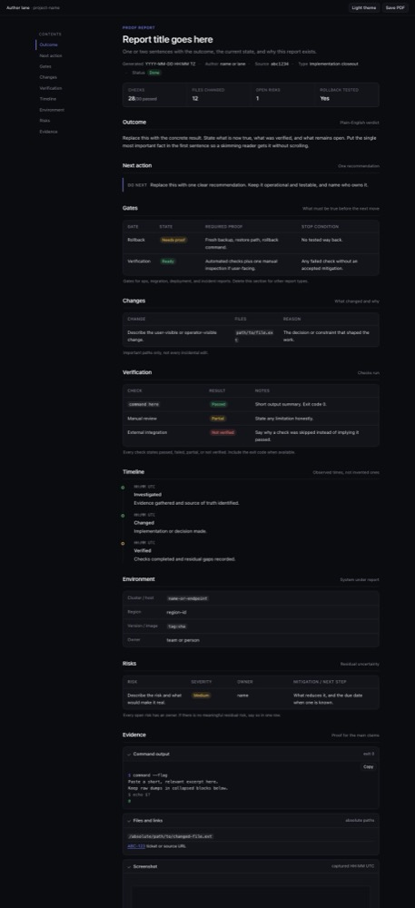
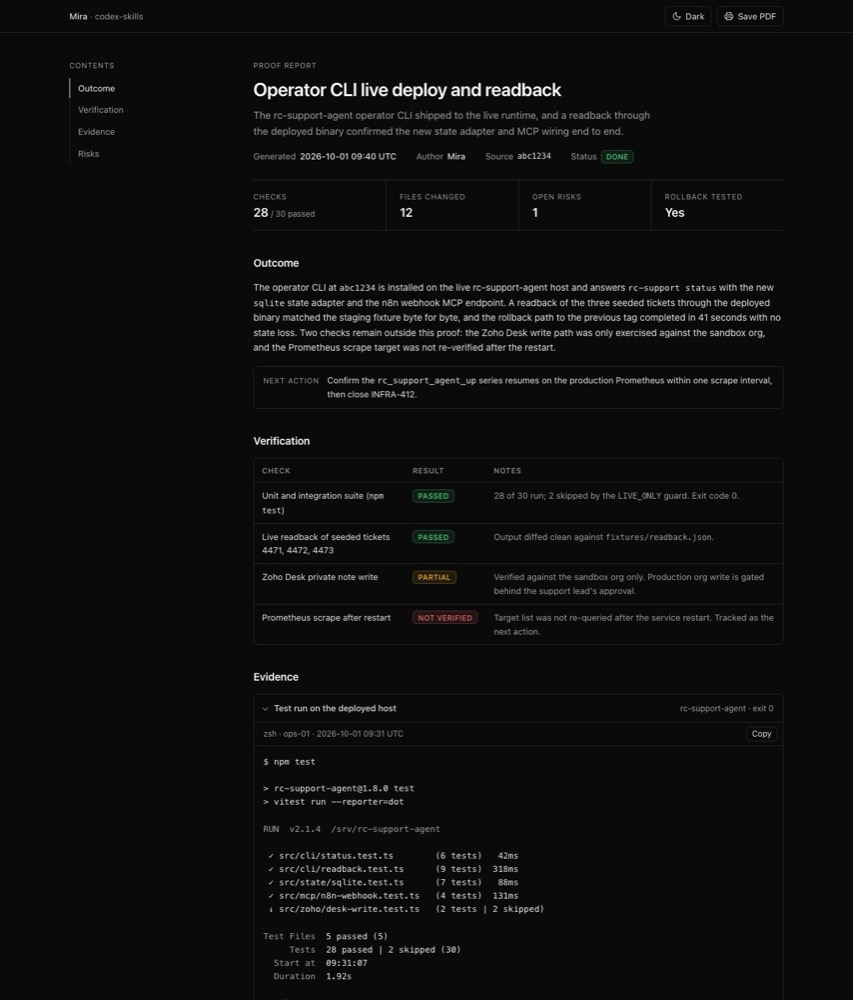
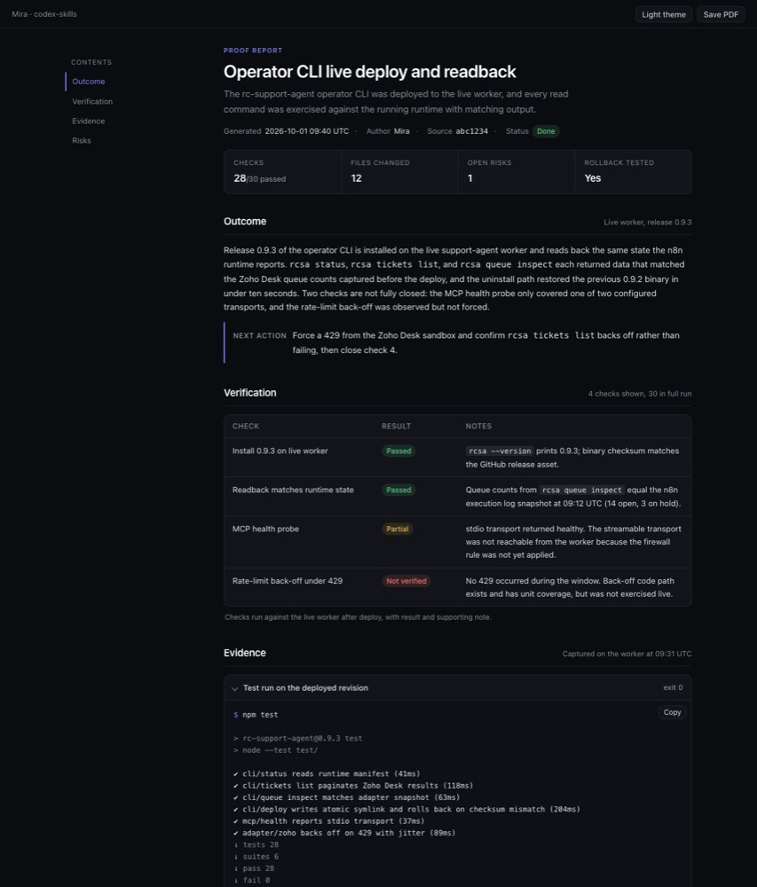
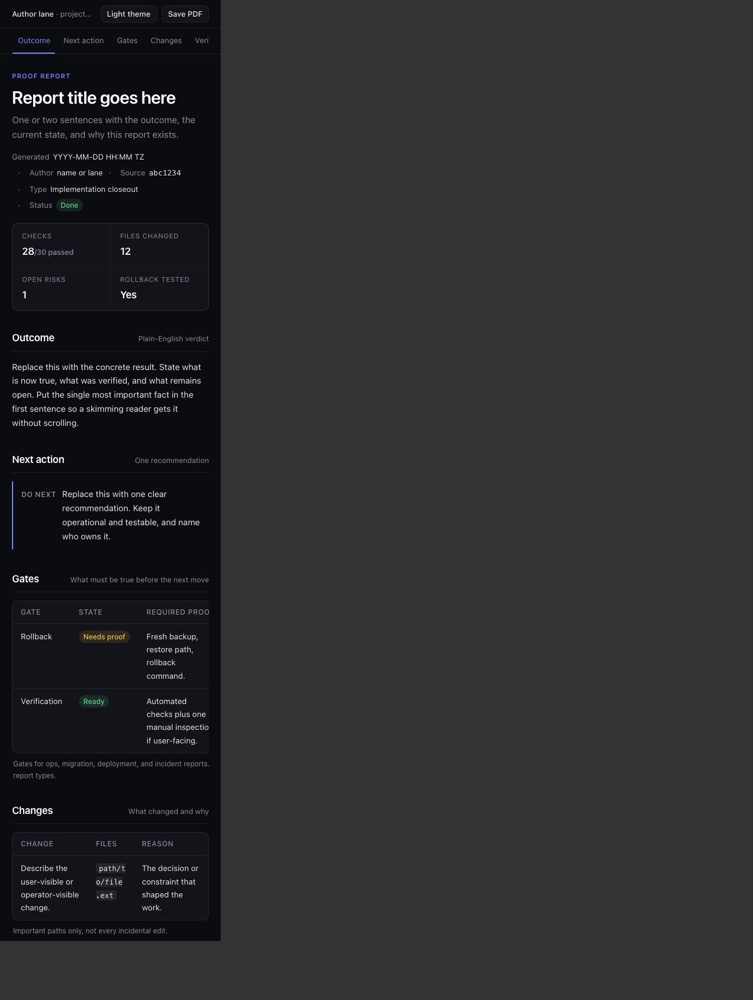
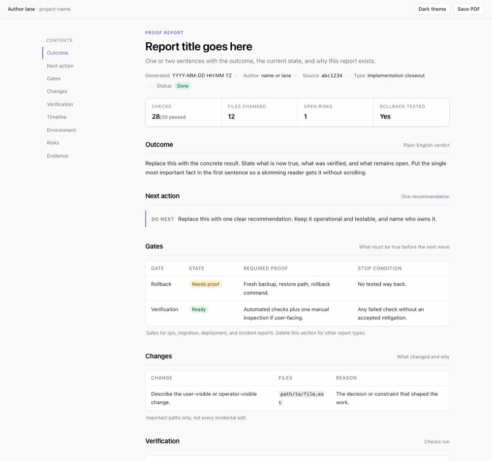
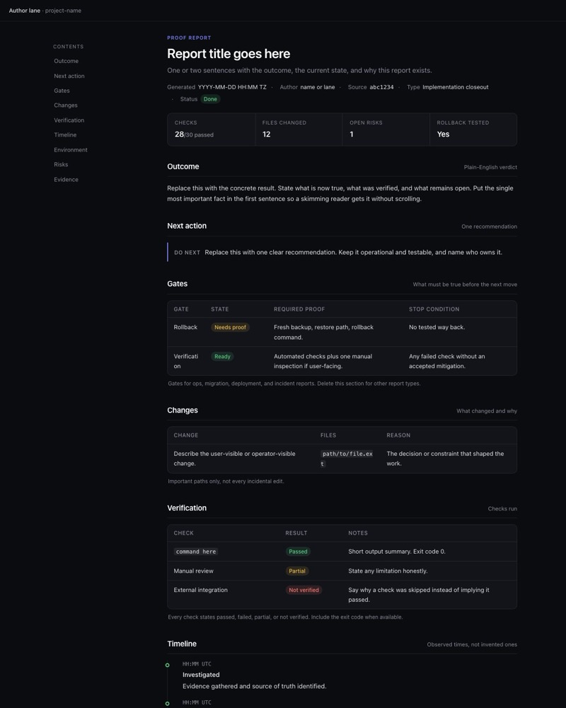

Implementation closeout
codex-html-report template redesigned as v1.0.0
The report template moved from the 2023-style charcoal-and-gold editorial shell to a flat dark-first layout with a sticky table of contents, and the skill text was refreshed to match. This report is itself the first filled sample of the new template.
- Templatev1.0.0 from v0.7.2
- Files changed5
- Local checks10/10 passed
- External reviews2/2 complete
Outcome
Plain-English verdictThe redesigned template is committed on a branch, validates cleanly, renders without overflow at phone, tablet, and desktop widths in both themes and with scripting disabled, and prints to a clean PDF. Vincent chose the direction in two rounds of questions and picked the single-accent candidate from side-by-side screenshots before the full build.
The skill text now names the Claude Code fallback for chart-heavy work, points report types at a per-type section-order reference, and closes the two backlog rows that had been open since June. Both external reviews required for a skill-steering change have returned and their blocking findings are fixed. The installed copies on this machine are refreshed and byte-identical to the branch. What remains is the pull request merge and the parity run on the other approved hosts.
Next action
One recommendationmira-ready parity on the other approved hosts so Codex sessions there pick up v1.0.0. Open a fresh Claude Code or Codex session on this machine and generate one real report to confirm discovery end to end.
Changes
What changed and why| Change | Files | Reason |
|---|---|---|
| Template rebuilt as v1.0.0: flat neutral surfaces, one indigo accent, system sans, sticky left contents, fixed section ids, no tabs, lightbox, progress bar, or back-to-top. Topbar shows author lane and project instead of a Codex badge. | templates/report.html |
Vincent judged the v0.7 look dated. Tabs hid content the QA checklist requires visible. Branding was Codex-only while the skill now runs on Claude Code too. |
Goal, template shell signature, visual rules, and report-types section rewritten; description trimmed from 405 to 262 characters; visualization route gains the Claude Code dataviz fallback. |
SKILL.md |
The old route named a Codex-only plugin with no fallback. The description was the heaviest line in the skill catalog budget. |
| New per-type section-order reference for the six report types. | references/report-types.md |
Closes the P1 "report-type variants" backlog row as one shell plus a reference, instead of six template variants. |
| Shell checklist updated to the new topbar, contents, and copy buttons; new rule that no content hides behind tabs. | references/report-qa.md |
Keeps the QA list in step with what the template actually ships. |
Codex review fixes (commit 216cceb): dark default regardless of system preference; evidence disclosures open by default with a collapsed raw-appendix example; scrollspy picks the section at the reading line; darker light-theme and print status colours; a copy button on every pre with a live-region announcement and a stable label; valid button font declarations. |
templates/report.html |
Two of the nine Codex findings were blocking: the template could open light on a light-system machine, and a no-script PDF dropped the files, links, and screenshot evidence. |
Grok review fixes (third commit): underlined body links; darker light success colour; auto-fit facts grid with hairline gaps; copy button in a header band above each pre; skip-link scroll margin; theme button without a pressed state; scrollspy writes only on change and keeps the active item visible in the horizontal bar; short pages stay on the first section; print sets a light colour scheme and no longer clips tall blocks; ellipsized summaries; wrapping key-value terms; clipboard fallback restores focus. |
templates/report.html |
Grok measured dark-theme body links at 2.53:1 against body text with no underline, which fails WCAG 1.4.1 Use of Color. |
| Version set to v1.0.0, P1 and P3 rows closed, decision log entry with reasons and verification. | references/template-improvements.md |
The improvements log is the skill's decision record. |
Verification
Checks run on 6a3a8f3, re-run on 216cceb after the Codex fixes| Check | Result | Notes |
|---|---|---|
html-validate on the template |
Passed | 0 errors, exit code 0. The system tidy was tried first and rejected because it predates HTML5 landmarks. |
| Contents links resolve to section ids | Passed | All ten hrefs found a matching id, including the skip link. |
| No external dependencies | Passed | The only URLs are the SVG namespace and an example.invalid placeholder link. |
| Headless Chrome at 1280px: dark, light, script removed | Passed | Light theme variables apply. With the script removed the theme, print, and copy controls hide and every section stays visible. |
| Headless Chrome at 375px and 768px in fixed-width iframes | Passed | Passed after two fixes: the contents nav needed min-width: 0 to stop forcing the page wider than 375px, and table cells moved from overflow-wrap: anywhere to break-word to stop splitting words. |
| Print to PDF | Passed | 4 pages. Contents and controls hidden, pills outlined, closed evidence blocks opened by the beforeprint handler and restored after. |
| Skill text consistency grep | Passed | No remaining references to tabs, lightbox, stat tiles, meters, serif, or editorial styling outside the Avoid lists. |
| Contents scrollspy | Passed | Hash navigation to Evidence, Next action, and Risks highlighted the matching contents item in the preview tab. In headless Chrome under virtual time only one scroll event fires; that event moved the highlight to Timeline at scroll offset 1341. The bottom-of-page case is covered by code reading only. |
| No-script print to PDF | Passed | With the script block removed, the PDF still shows the files, links, and screenshot evidence because those disclosures now start open. Only the raw appendix stays collapsed, as designed. |
| Codex external review | Passed after fixes | Nine findings on 6a3a8f3: two blocking (theme followed the system preference instead of defaulting to dark; evidence disclosures started closed and were lost in a no-script PDF), six minor, one nit. All nine fixed in the follow-up commit; see the Changes and Evidence sections. |
| Grok external review | Passed after fixes | Source review of the fixed template at 216cceb, with the template pasted inline because the first run stalled on a file-read prompt. One blocking finding (dark-theme body links were colour-only at 2.53:1 against body text), fourteen minor, seven nits. The blocking finding and thirteen of the minors are fixed in the third commit; the rest are recorded with reasons in the improvements log. |
| Installed copy refreshed and drift check | Passed | scripts/install.sh wrote the skill to the agents, Cursor, and Claude Code skill directories; the Claude Code copy is byte-identical to the branch and carries the v1.0.0 comment. The drift check reports four pre-existing system-skill hash mismatches (imagegen, openai-docs, skill-creator, skill-installer) that are unrelated to this change. |
| Model-visible discovery | Partial | The skill catalog in the authoring session already shows the trimmed description after install, so Claude Code discovery on this machine is confirmed. A fresh Codex session and the other approved hosts are not yet verified. |
Timeline
Observed, local time BST-
Assessed
Read the skill, template, improvements log, and QA checklist. Confirmed every skill-made report since 2026-09-11 carried the v0.7.2 signature. Found the Codex-only visualization route and the P1 row open since June.
-
Direction decided
Two rounds of questions: flat Linear/Vercel direction, dark-first kept, sticky left contents, system sans, author-lane branding, one shell plus a report-types reference, modern interactions only.
-
Branch and mockups
Created the branch. Two subagents built competing mockups in parallel while the skill-text edits landed in the main thread.
-
Candidate chosen
Both mockups rendered at 1280px and 375px. Vincent picked the single-accent candidate.
-
Full template rendered
First v1.0.0 renders at 1280px dark, light, and no-script; 375px and 768px; PDF. Found the contents overflow and word-splitting defects.
-
Fixed and re-verified
Three fixes applied. Re-rendered 375px, tall desktop, and PDF.
html-validateclean. -
Committed, reviews started
Commit 6a3a8f3. Codex and Grok external reviews started against it.
-
Codex review returned
Nine findings, two blocking. The first Grok run stalled on a file-read permission prompt and was stopped.
-
Fixes committed and re-verified
Commit 216cceb. Renders, no-script PDF, validation, and scrollspy probes re-run on the fixed template. Grok re-run with the template inline so it needs no file access.
-
Installed and pushed
Installed copies refreshed on this machine; branch pushed to origin.
-
Grok review returned
One blocking and fourteen minor findings on the fixed template.
-
Grok fixes re-verified
Third commit. Validation, 1280px dark and light, 375px, and the no-script PDF re-run on the final template.
Risks
Residual uncertainty| Risk | Severity | Owner | Mitigation / next step |
|---|---|---|---|
| Other approved hosts keep generating v0.7.2 reports until their installed copy is refreshed. | Medium | Vincent, via mira-ready | Run mira-ready parity after the pull request merges. Reports carry the template version comment, so drift is visible with one grep. |
| With scripting disabled, closed evidence blocks stay collapsed in print because the opening is done by JavaScript. | Low | Mira | Authors mark the evidence that matters open in the markup, which the skill already asks for. |
| Timeline state is shown by dot colour only; an author who leaves the state out of the item text produces an inaccessible timeline. | Low | Mira | The template comment marks the dot as decorative and the sample items carry the state in their titles. |
Evidence
Proof for the main claimsBefore and after at 1280px


The two candidates Vincent chose between


Phone width, light theme, and no-script renders



Validation and anchor check
$ cd skills/codex-html-report/templates $ npx -y html-validate@latest --formatter stylish report.html (no output) html-validate exit=0 $ for h in $(grep -o 'href="#[a-z-]*"' report.html | sed 's/href="#//;s/"//' | sort -u); do grep -q "id=\"$h\"" report.html && echo "ok $h" || echo "MISSING $h"; done ok changes ok environment ok evidence ok gates ok main ok next-action ok outcome ok risks ok timeline ok verification $ grep -nE 'https?://' report.html 553: href="https://example.invalid/ticket/ABC-123" # placeholder link 564: xmlns="http://www.w3.org/2000/svg" # SVG namespace
Render and print commands
# scratch copies: light.html forces applyTheme('light'); nojs.html has the script block removed; # frame-375.html and frame-768.html embed report.html in a fixed-width iframe $ C="/Applications/Google Chrome.app/Contents/MacOS/Google Chrome" $ "$C" --headless=new --disable-gpu --hide-scrollbars --window-size=1280,2600 \ --screenshot=v1b-desktop-tall.png http://127.0.0.1:8742/v1/report.html $ "$C" --headless=new --disable-gpu --hide-scrollbars --window-size=1280,1700 \ --screenshot=v1b-mobile-375.png http://127.0.0.1:8742/v1/frame-375.html $ "$C" --headless=new --disable-gpu --no-pdf-header-footer \ --print-to-pdf=v1b.pdf http://127.0.0.1:8742/v1/report.html pages 4 # Chrome headless on macOS stayed resident after writing each file and was stopped with pkill; # the files were complete before the kill.
Files
skills/codex-html-report/templates/report.htmlskills/codex-html-report/SKILL.mdskills/codex-html-report/references/report-types.md(new)skills/codex-html-report/references/report-qa.mdskills/codex-html-report/references/template-improvements.mdreports/assets/2026-10-01-codex-html-report-v1/(seven compressed screenshots used above)